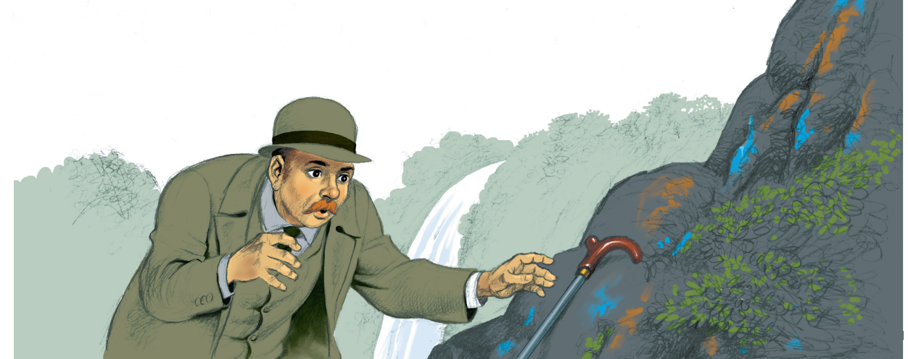

Reflexiono para avanzar
Alumno:
Reflexiono para avanzar
Alumno:
1. ¿Habrá relación entre las acciones de un investigador en la vida real y las que lleva a cabo en el relato policial? Comenta en clase.
2. Lee el siguiente relato de Arthur Conan Doyle que fue publicado en 1893.
El problema final
(Fragmento)
[…] Había algo extraño en todo esto. No era normal en Holmes tomarse unas vacaciones sin más, y había algo en la palidez y en el cansancio de su rostro que me decía que debía estar sufriendo una fuerte tensión nerviosa. Vio la pregunta en mi mirada y, juntando las manos y apoyando los codos en las rodillas, me explicó la situación.
—Es posible que nunca haya oído hablar del profesor Moriarty —dijo.
—Nunca.
—Sí, ahí está lo maravilloso del asunto —exclamó—. La maldad de ese hombre impregna todo Londres y nadie ha oído hablar de él. Esto es lo que le coloca en la cumbre del crimen. Le digo, Watson, hablando con toda seriedad, que si pudiera derrotar a ese hombre, si pudiera librar a la sociedad de él, me parecería haber alcanzado la cima de mi carrera y podría disponerme a llevar una vida más plácida. No podría descansar, Watson, no podría sentarme tranquilamente en un sillón sabiendo que un hombre como el profesor Moriarty se está paseando libremente por las calles de Londres.
—¿Qué es lo que ha hecho?
—Hizo una carrera extraordinaria. Es un hombre de buena familia y recibió una esmerada educación; tiene, además, por naturaleza, unas excepcionales dotes para las matemáticas. Este hombre tenía una tendencia hereditaria de lo más diabólica. Llevaba en la sangre un instinto criminal que, en lugar de atenuarse, se acentuó, haciéndose infinitamente más peligroso, debido a sus extraordinarias facultades mentales. En la Universidad empezaron a correr rumores sobre él, obligándole por último a renunciar a la cátedra y volver a Londres, en donde se estableció como tutor en el Ejército. Esto es lo que sabe la gente, pero lo que voy a contarle es lo que yo he descubierto.
Como bien sabe usted, Watson, no hay nadie en Londres que conozca tan bien como yo el mundo del crimen. Durante años no he dejado de ser consciente de que tras el malhechor existe un poder oculto, un cierto poder organizado, que actúa en la sombra sin salirse de la ley y que siempre ampara al delincuente.
Una y otra vez, en casos diferentes, he sentido la presencia de esta fuerza y he colegido que había actuado en muchos de esos crímenes sin descubrir, en los que no fui directamente consultado. Durante todos estos años, he puesto todo mi empeño en atravesar el velo que lo envuelve, y por último, me llegó el momento, y dando con el hilo, lo seguí; este me llevó, tras un sinfín de astutas vueltas y revueltas, hasta el exprofesor Moriarty, la celebridad matemática.
Es el Napoleón del crimen. Es la mente organizativa de la mitad de los hechos depravados de los que se tiene conocimiento y de casi todos los que pasan inadvertidos en esta gran ciudad. Es un genio, un filósofo, un pensador abstracto
El profesor estaba rodeado de medidas de seguridad tan bien concebidas que, hiciera lo que hiciera, parecía imposible conseguir una evidencia que pudiera declararle culpable en presencia de un tribunal. Usted conoce mis facultades, mi querido Watson, y, sin embargo, al cabo de tres meses tuve que confesarme a mí mismo que por fin había dado con un antagonista que era intelectualmente igual a mí. Mi horror por sus crímenes se perdió en medio de mi admiración por su habilidad. Pero finalmente cometió un error, solo un pequeño, un mínimo error, que era más de lo que podía permitirse, estando yo tan cerca de él. No deseché la oportunidad y, partiendo de ese punto, he tejido mi red en torno a él, teniendo ahora todo dispuesto para cerrarla. Dentro de tres días, es decir, el próximo martes, el asunto estará maduro, y el profesor, con todos los miembros principales de su banda, estará en manos de la policía. Después vendrá el mayor juicio del siglo, la aclaración de más de cuarenta misterios y la horca para todos ellos. Pero si actuamos prematuramente, ¿comprende usted?, podrían escaparse de nuestras manos incluso en el último momento. […]
[…] Con un estremecimiento de miedo eché a correr calle abajo y me encaminé al sendero de que acababa de descender. Me había llevado una hora bajar. A pesar de todos mis esfuerzos pasaron otras dos antes de que me volviera a encontrar en la catarata de Reichenbach.
El bastón de paseo de Holmes seguía apoyado en la roca donde yo le había dejado. Pero no había indicios de su presencia y de nada me sirvió gritar. La única respuesta que obtuve era mi propia voz, que multiplicaba el eco de los riscos que me rodeaban.
Fue la visión del bastón de paseo lo que me dejó frío. No había ido, pues, a Rosenlaui, se había quedado en aquel estrecho sendero de no más de tres pies de anchura con una pared que se levantaba a pico a un lado y una caída semejante por el otro, hasta que su enemigo lo había alcanzado. El joven suizo había desaparecido también. Lo más probable es que también él trabajara para Moriarty y los hubiera dejado solos. ¿Y qué había sucedido después? ¿Quién nos lo iba a decir?
Me quedé quieto un rato, intentado recobrar el dominio de mí mismo, porque estaba totalmente aturdido por el horror.
Luego empecé a pensar en los propios métodos de Holmes y a ponerlos en práctica para interpretar esta tragedia. Solo que, ¡ay!, era demasiado sencillo. Durante nuestra conversación no habíamos ido hasta el final del sendero y el bastón señalaba el lugar en el que nos habíamos quedado. La tierra negruzca está siempre blanda, debido a la incesante lluvia, y un pájaro hubiera dejado sus huellas en ella. Dos líneas de pisadas estaban claramente impresas a lo largo del camino y ambas lo seguían hasta más allá de donde yo estaba. No había ninguna que volviera hacia mí. A unas yardas del final, el suelo era un amasijo de barro totalmente surcado de pisadas, y las zarzas y los helechos del borde del abismo estaban todos arrancados y aplastados. Me tumbé boca abajo y ahora no podía ver sino el brillo de la humedad aquí y allí en las negras paredes y allá abajo, en las profundidades del abismo, el brillo de aguas tumultuosas. Grité, pero solo me respondió el grito casi humano de la catarata.
Pero el destino había previsto que, después de todo, tuviera una última palabra de agradecimiento de mi amigo y compañero.
Ya he dicho que su bastón de paseo estaba apoyado en la roca que sobresalía del sendero. Vi algo que brillaba encima de esta y, levantando la mano, descubrí que el brillo procedía de la pitillera de plata que solía llevar consigo. Al cogerla, cayó al suelo un cuadrado de papel sobre el que esta había sido depositada. Lo desplegué y vi que consistía en tres páginas arrancadas de su libro de notas y que estaban dirigidas a mí. Como correspondían a su carácter, la dirección era tan precisa y la escritura tan firme y clara como si las hubiera escrito cómodamente sentado en su estudio.
"Mi querido Watson —decía—, le escribo estas líneas gracias a la cortesía del señor Moriarty, que me ha dejado elegir el momento para discutir por última vez cuestiones que se interponen entre nosotros. Me ha hecho un breve resumen de los métodos que ha seguido para esquivar a la policía inglesa y mantenerse al tanto de nuestros movimientos. Estos confirman la ya muy alta opinión que me había formado de sus habilidades. Estoy contento de saber que podré librar a la sociedad de los efectos de su presencia, aunque me temo que sea a un precio que supondrá un gran dolor para mis amigos y en especial, mi querido Watson, para usted. No obstante, ya le he explicado que mi carrera había llegado, en cualquier caso, a su momento crítico, y ninguna otra solución posible sería tan de mi agrado como esta. De hecho, si puedo serle totalmente sincero, estaba casi seguro de que la carta procedente de Meiringen era una treta y permití que se fuera con la convicción de que sería algo así lo que sucedería a continuación. Dígale al inspector Patterson que los documentos que necesita para declarar culpable a la banda están en el casillero 'M', guardados en un sobre azul en el que está escrito 'Moriarty'.
Dispuse el reparto de mis propiedades antes de abandonar Inglaterra, cediéndole todo a mi hermano Mycroft. Salude en mi nombre a la señora Watson y créame, querido amigo, que nunca he dejado de serlo suyo, sinceramente. SHERLOCK HOLMES".